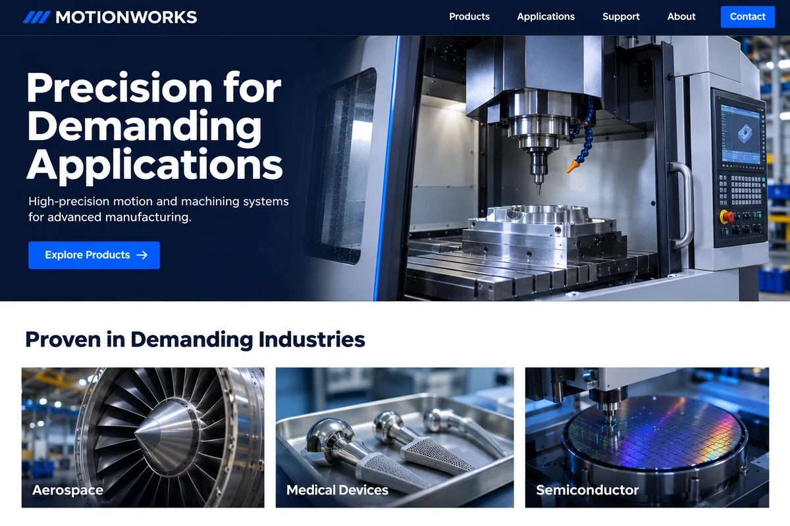
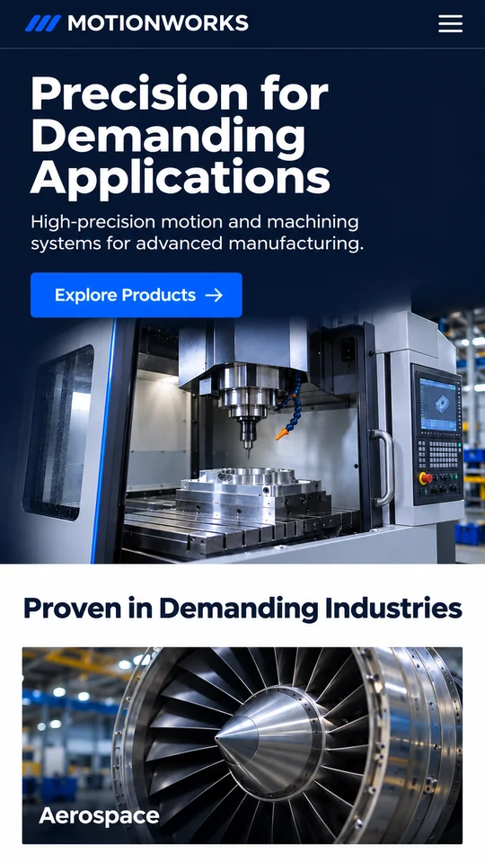

← 返回案例展示
机械装备 · 设计样例
按应用场景组织的产品站
首页按采购场景组织产品入口，让海外买家更快找到适用设备和对应的产品资料。
要解决的问题 原站按内部型号分类，海外买家习惯按产线和工况找设备，关键参数又集中在 PDF 里。


机械装备 · 设计样例
首页按采购场景组织产品入口，让海外买家更快找到适用设备和对应的产品资料。
要解决的问题 原站按内部型号分类，海外买家习惯按产线和工况找设备，关键参数又集中在 PDF 里。

